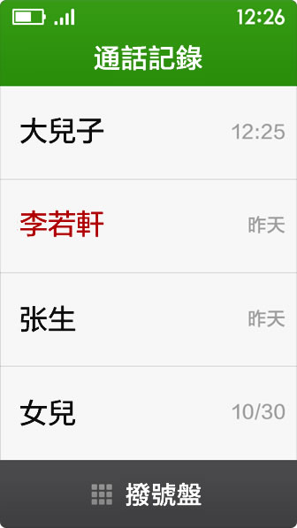
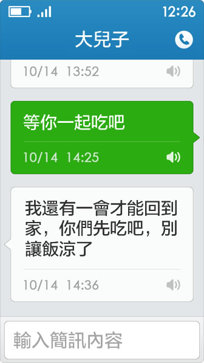
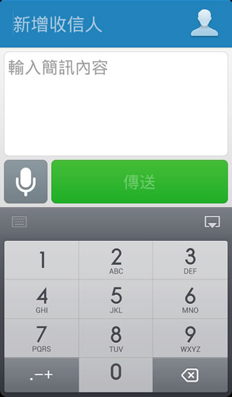
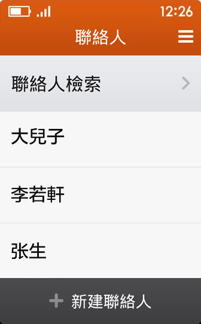
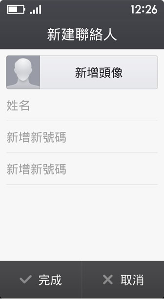

基本操作
- 點選和滑動
手指在螢幕上點選和滑動是最常用功能，可以用於執行和選擇程式。 - 長按和拖動
在某種情況下，按住一些條目，會啟用編輯模式或促發更多操作，還可以拖動到其他地方。
桌面

- 手指左右滑動可以瀏覽更多程式；
- 點選桌面上的程式，可以使之啟動。
電話

- 通話記錄
紅色為未接電話；
點選聯絡人可檢視該聯絡人資訊；
點選[撥號盤]可撥打號碼。

- 選擇/儲存聯絡人
在撥號界面可以選擇聯絡人，也可儲存已輸入的電話號碼。
簡訊

- 簡訊記錄
紅色為新電話；
點選可檢視與該聯絡人的簡訊內容；
點選[寫簡訊]可傳簡訊。

- 簡訊對話
點選簡訊內容可進入大字體界面，並伴隨語音播報。

- 寫簡訊
進入簡訊編輯頁面，選擇或輸入收信人號碼，編輯簡訊內容支援手寫或語音輸入。
聯絡人

- 聯絡人檢索
可以按姓名首字母進行聯絡人檢索。

- 新建聯絡人
新增聯絡人姓名及電話號碼。
常見問題
- 如何查看手機中安裝的其他應用，並添加到桌面上？
在桌面上點擊“程式列表”，可以查看手機中安裝的其他應用，點擊“＋”添加到桌面，點擊“一”從桌面上移除。
- 如何查看系統設定？
在桌面上點擊“設定”，選擇系統設定。
- 桌面上的程式如何調整位置或者進行卸載？
在桌面上點擊“設定”，選擇“桌面管理”進入編輯模式，可以拖動程式色塊進行位置調整，拖動到上方的“刪除程式”可以卸載程式。
- 如何使用極簡鎖屏界面？
在桌面上點擊“設置”，將“極簡鎖屏”功能開啓即可。
- 點擊簡訊爲什麽不能進行語音播報？
在桌面上點擊“設置”，將“語音播報”功能開啓即可。
- 如何在桌面上添加聯絡人？
滑動到桌面左一界面，點擊“添加”，選擇聯絡人“添加到桌面”即可。
- 如何給聯絡人添加大頭像？
選擇聯絡人，點擊筆形的編輯圖標，可以添加頭像，也可以進行信息更改。
更多內容歡迎關注以下方式：
微信公共賬號：極簡時代
新浪微博：@老年桌面
官方論壇：www.jeejen.com
新浪微博：@老年桌面
官方論壇：www.jeejen.com